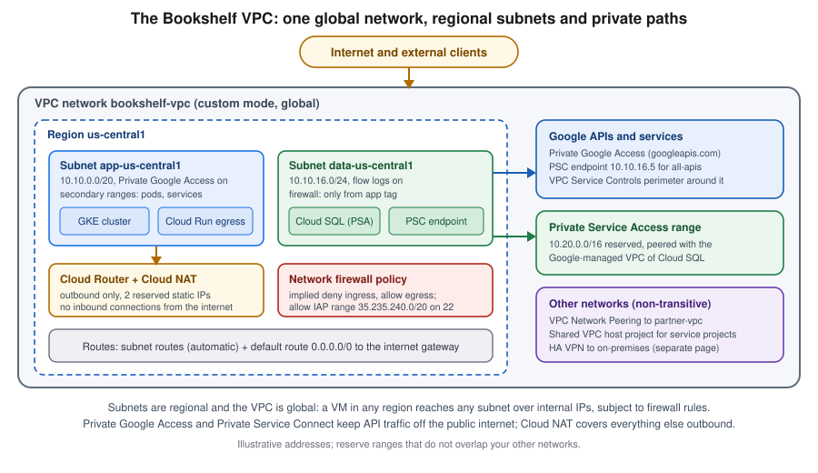

VPC Networking on Google Cloud
|
This content was generated with the assistance of AI and should be verified against the official documentation before being relied on in production. |
Examples on this page target the gcloud CLI 586 (release 586.0.0 of 2026-09-22) and the Compute Engine networking APIs
described in the VPC documentation, checked on 2026-10-01. Networking
features, firewall tiers and launch stages move quickly, so re-verify with gcloud --version and the
VPC release notes before relying on a flag. A Virtual Private
Cloud (VPC) network is a virtual network that spans every region of a Google Cloud project: unlike the regional
networks of some other clouds, one VPC is global, its subnets are regional, and VMs in different regions reach each
other over internal IP addresses without any extra gateway. In the Bookshelf scenario (described in
the section introduction) the catalog-api and orders-api workloads on
Cloud Run and GKE, the Cloud SQL
database bookshelf-catalog from Cloud SQL and the admin VMs from
Compute Engine all live in, or attach to, one VPC called bookshelf-vpc. Name resolution
and certificates are on Cloud DNS and Certificate Manager; load balancers in front of the
subnets on Load Balancing and Cloud Armor; VPN and Interconnect on
VPN and Hybrid Connectivity. my-project-id, us-central1 and every address range are
placeholders.

The pieces of a VPC
| Piece | What it is |
|---|---|
VPC network |
A global, software-defined network inside one project. It has no address range of its own; only its subnets do. |
Subnet |
A regional IP range (primary range plus optional secondary ranges) in one region. A subnet spans all zones of its region. IPv4 only, dual-stack (IPv4 and IPv6) and IPv6-only subnets exist. |
Route |
A next hop for a destination range. Subnet routes are created automatically; static and dynamic (Cloud Router, BGP) routes are added on top. The default route |
Firewall rule or policy |
Stateful, distributed filtering enforced at each VM network interface. Every VPC has an implied rule that denies ingress and an implied rule that allows egress. |
External and internal IP addresses |
Ephemeral or reserved; internal addresses come from the subnet, external ones from Google’s pool. |
Cloud Router and Cloud NAT |
Cloud Router speaks BGP and hosts NAT configurations; Cloud NAT gives VMs, GKE nodes and serverless connectors without external IPs outbound access. |
Private connectivity |
Private Google Access, Private Service Connect (PSC), Private Service Access (PSA), VPC Network Peering, Shared VPC, Network Connectivity Center. |
A subnet reserves four IPv4 addresses (the network address, the default gateway, the second-to-last address and the
broadcast address), so a /29 is the smallest usable primary range. Primary ranges of subnets in one VPC cannot
overlap, and ranges that you later want to peer or connect by VPN must not overlap on either side, so plan the
address space for the whole company before creating the first subnet. A subnet’s primary range can be expanded (never
shrunk) in place, which is the usual remedy for a range that was sized too tightly.
See VPC networks and Subnets.
Auto mode versus custom mode
A VPC network is created in one of two subnet creation modes.
| Mode | Behaviour | Use it when |
|---|---|---|
Auto mode |
One subnet per region is created automatically from |
Only for throwaway experiments in a lone project |
Custom mode |
No subnets exist until you create them, and you choose region, range and options. Nothing changes without you. |
Everything else: production, peering, VPN, hybrid, anything that must not overlap |
The ranges of an auto-mode network overlap with the ranges of every other auto-mode network and fit poorly with VPN
or peering, so the standard advice is to run custom-mode networks only. An auto-mode network can be converted to
custom mode in place (the reverse is not possible). Newer organizations are created
secure by default, and the
organization policy compute.skipDefaultNetworkCreation stops projects from getting a default network and its
open rules at all; older guides start with the default network, the current approach is to create a custom-mode VPC
and delete default if it exists (see Governance, Security and Compliance).
Creating the network and subnets
In the Google Cloud console
-
Select the project in the project picker at the top of the console. Open VPC network, then VPC networks; the Compute Engine API is enabled on first use. You can run the CLI variant in Cloud Shell instead.
-
Choose Create VPC network and enter the name
bookshelf-vpc. -
Under Subnet creation mode choose Custom.
-
Under New subnet enter the name
app-us-central1, the regionus-central1and the IPv4 range10.10.0.0/20. -
Set Private Google Access to On and Flow logs to On (adjust the aggregation interval and sampling rate under Configure logs).
-
For a GKE subnet choose Add secondary IPv4 range twice and enter the pod range
10.20.0.0/16and the service range10.30.0.0/20. -
Choose Done, add a second subnet
data-us-central1with the range10.10.16.0/24, leave IPv6 as None (or pick Dual stack / Single stack), then choose Create. -
To delete the unused
defaultnetwork, select it in the list and choose Delete VPC network.
With the gcloud CLI
gcloud services enable compute.googleapis.com
export PROJECT_ID=$(gcloud config get-value project)
export REGION=us-central1
# A custom-mode, global VPC with regional dynamic routing
gcloud compute networks create bookshelf-vpc \
--subnet-mode=custom \
--bgp-routing-mode=regional
# App subnet: Private Google Access, flow logs, secondary ranges for GKE pods and services
gcloud compute networks subnets create app-us-central1 \
--network=bookshelf-vpc \
--region="$REGION" \
--range=10.10.0.0/20 \
--secondary-range=pods=10.20.0.0/16,services=10.30.0.0/20 \
--enable-private-ip-google-access \
--enable-flow-logs \
--logging-aggregation-interval=interval-5-sec \
--logging-flow-sampling=0.5 \
--logging-metadata=include-all
# Data subnet
gcloud compute networks subnets create data-us-central1 \
--network=bookshelf-vpc \
--region="$REGION" \
--range=10.10.16.0/24 \
--enable-private-ip-google-access
# Grow a primary range later (never shrink)
gcloud compute networks subnets expand-ip-range app-us-central1 \
--region="$REGION" --prefix-length=19
# Inspect
gcloud compute networks subnets list --network=bookshelf-vpc \
--format="table(name,region.basename(),ipCidrRange,privateIpGoogleAccess)"See gcloud compute networks create,
gcloud compute networks subnets create
and Create and manage VPC networks. For a
dual-stack subnet add --stack-type=IPV4_IPV6 --ipv6-access-type=EXTERNAL (or INTERNAL); an IPv6-only subnet uses
--stack-type=IPV6_ONLY, see IPv6 subnets.
Routes and Private Google Access
Routes decide where a packet goes after the firewall allows it. Every subnet gets a subnet route automatically, and
every VPC starts with a default route 0.0.0.0/0 whose next hop is the default internet gateway. A route is chosen by
the most specific destination range first, then by lowest priority number (the default is 1000). Dynamic routes
learned by a Cloud Router over BGP (from HA VPN or Interconnect) take part in the same selection; the network’s
dynamic routing mode decides whether they cover one region (regional) or all regions (global).
# A static route that sends a partner range through a specific VM or VPN tunnel
gcloud compute routes create to-partner \
--network=bookshelf-vpc \
--destination-range=192.168.50.0/24 \
--next-hop-instance=fw-appliance-1 \
--next-hop-instance-zone=us-central1-a \
--priority=900
gcloud compute routes list --filter="network:bookshelf-vpc" \
--format="table(name,destRange,priority,nextHopGateway.basename(),nextHopIp)"See gcloud compute routes create and
Routes.
Private Google Access lets VMs that have only internal IP addresses reach the external IP addresses of Google APIs and
services (storage.googleapis.com, artifactregistry.googleapis.com, and so on). It is a per-subnet switch, shown above
as --enable-private-ip-google-access, and it needs a route to the default internet gateway (or to the special
Google API ranges) for the traffic to leave the VM, although the traffic never traverses the public internet. Two special
domains narrow the destinations: private.googleapis.com (199.36.153.8/30) reaches all Google APIs, and
restricted.googleapis.com (199.36.153.4/30) reaches only the APIs that VPC Service Controls supports, which is the
pairing used with perimeters (below). Resolving those names to the chosen range needs a private Cloud DNS zone, see
Cloud DNS and Certificate Manager. Private Google Access is only for Google APIs; reaching
other services outbound is the job of Cloud NAT, and reaching a managed database privately is the job of Private
Service Access or Private Service Connect, both below.
Firewalls
Google Cloud has two generations of firewall objects, and the effective rule set for a VM is the combination of all of them. All of them are stateful: if a connection is allowed in one direction, return traffic is allowed automatically.
| Object | Notes |
|---|---|
VPC firewall rules |
The original, per-network resource ( |
Network firewall policies |
A policy resource containing ordered rules, global or regional, associated with one or more VPC networks. Targets can use secure tags (IAM-governed tags from Resource Manager), service accounts, or the whole network. Rules can match address groups, FQDN objects, geolocations and threat-intelligence lists, depending on the Cloud NGFW tier. |
Hierarchical firewall policies |
Policies attached to the organization or a folder, inherited by every VPC below. They are how a central security team enforces guardrails (for example "always allow the IAP and health-check ranges", "always deny RDP from the internet") that project owners cannot override. |
Rules have a direction (INGRESS or EGRESS), a priority from 0 to 65535 where a lower number wins, an action
(allow, deny; policies also offer goto_next and, with Cloud NGFW, apply_security_profile_group), and a match.
The two implied rules (deny all ingress, allow all egress) have the lowest possible priority, 65535, and cannot be
deleted. By default, rules are evaluated in this order: hierarchical policies from the organization down to the folder
of the project, then VPC firewall rules, then global network firewall policies, then regional network firewall
policies, and finally the implied rules. A network setting (--network-firewall-policy-enforcement-order) can move
VPC firewall rules after the network policies, which is what you want once you migrate to policies.
Cloud NGFW is the name of the firewall product that these policies belong to; it has three tiers. Essentials is the free layer-3 and layer-4 stateful filtering with tags, address groups and geography. Standard adds fully qualified domain name (FQDN) and geolocation objects and Google threat-intelligence lists. Enterprise adds intrusion detection and prevention (IDS/IPS) and TLS inspection through security profiles and endpoints. Check the tier comparison for what each costs and which of them are in Preview.
Why not 0.0.0.0/0? A source range of 0.0.0.0/0 on a rule that allows tcp:22, tcp:3389 or a database port
publishes that port to the whole internet, and scanners find it within minutes. Allow the narrowest source possible:
your office range, a load balancer’s health-check ranges (130.211.0.0/22 and 35.191.0.0/16), or the Identity-Aware
Proxy range 35.235.240.0/20 for SSH and RDP through IAP TCP forwarding (see Compute Engine).
A rule should also be scoped by target, so that only the machines that need the port see it.
In the Google Cloud console
-
Open VPC network, then Firewall. The page lists VPC firewall rules and the firewall policies in the project.
-
Choose Create firewall rule. Enter the name
allow-iap-ssh, choose the networkbookshelf-vpc, set Priority1000and Direction of traffic Ingress, Action on match Allow. -
Under Targets choose Specified target tags and enter
ssh-via-iap. Under Source filter choose IPv4 ranges and enter35.235.240.0/20. Under Protocols and ports choose Specified protocols and ports, tick TCP and enter22. -
Turn Logs on if you need Firewall Rules Logging (it adds Logging cost), then choose Create.
-
For a policy, choose Create firewall policy (or Firewall policies, then Create). Choose Global or a region, add rules in priority order, then under Associations choose Associate and pick
bookshelf-vpc. -
For secure tags, open IAM & Admin, Tags, create the tag key
app-tier(purpose Firewall, networkbookshelf-vpc) and tag values such asfrontendanddatabase, then bind a value to each VM from the VM’s edit page.
With the gcloud CLI
# Classic VPC firewall rule: SSH from the IAP range only
gcloud compute firewall-rules create allow-iap-ssh \
--network=bookshelf-vpc \
--direction=INGRESS --priority=1000 --action=ALLOW \
--rules=tcp:22 \
--source-ranges=35.235.240.0/20 \
--target-tags=ssh-via-iap
# Egress deny for a sensitive tier, logged
gcloud compute firewall-rules create deny-db-egress-internet \
--network=bookshelf-vpc \
--direction=EGRESS --priority=900 --action=DENY \
--rules=all \
--destination-ranges=0.0.0.0/0 \
--target-tags=database \
--enable-logging
# Review
gcloud compute firewall-rules list --filter="network:bookshelf-vpc" \
--format="table(name,direction,priority,sourceRanges.list():label=SRC,allowed[].map().firewall_rule().list():label=ALLOW,targetTags.list())"The same intent as a global network firewall policy with secure tags (the current recommended model) looks like
this; the tag key is network-scoped, so a tag on a VM only matters inside bookshelf-vpc.
gcloud services enable cloudresourcemanager.googleapis.com
# Network-scoped tag key and values
gcloud resource-manager tags keys create app-tier \
--parent="projects/$PROJECT_ID" \
--purpose=GCE_FIREWALL \
--purpose-data="network=$PROJECT_ID/bookshelf-vpc"
gcloud resource-manager tags values create frontend --parent="$PROJECT_ID/app-tier"
gcloud resource-manager tags values create database --parent="$PROJECT_ID/app-tier"
# The policy, a rule that lets the frontend tier reach the database tier on 5432, and the association
gcloud compute network-firewall-policies create bookshelf-policy --global \
--description="Bookshelf east-west rules"
gcloud compute network-firewall-policies rules create 1000 \
--firewall-policy=bookshelf-policy --global-firewall-policy \
--direction=INGRESS --action=allow \
--layer4-configs=tcp:5432 \
--src-secure-tags="$PROJECT_ID/app-tier/frontend" \
--target-secure-tags="$PROJECT_ID/app-tier/database" \
--enable-logging
gcloud compute network-firewall-policies associations create \
--firewall-policy=bookshelf-policy --global-firewall-policy \
--network=bookshelf-vpc --name=bookshelf-assoc
# Create a VM already carrying a tag value (binding can also be added later)
gcloud compute instances create catalog-db-1 --zone="$REGION-a" \
--network=bookshelf-vpc --subnet=data-us-central1 --no-address \
--resource-manager-tags="$PROJECT_ID/app-tier/database"See gcloud compute network-firewall-policies,
Use global network firewall policies and
Tags for firewalls. Hierarchical policies
use gcloud compute firewall-policies with --organization or --folder; they require organization-level IAM roles
and are described at Hierarchical firewall policies.
Firewall Rules Logging records a log entry per connection that matches a logged rule, and the Firewall Insights
reports of the Network Intelligence Center point at shadowed and unused rules.
Static IP addresses
An external IP address attached to a VM is ephemeral by default: it changes when the VM stops. A reserved (static) address stays yours until you release it and can move between resources. The decision that matters is the scope.
| Scope | Used by | Notes |
|---|---|---|
Regional external IPv4 or IPv6 |
VM network interfaces, regional external load balancers, Cloud NAT, Cloud VPN gateways |
Tied to one region |
Global external IPv4 or IPv6 |
Global external Application and proxy Network load balancers |
Anycast: one address announced worldwide; the address a DNS A record for |
Regional internal addresses |
VMs, internal load balancers, PSC endpoints |
Taken from a subnet range and kept even when the VM is deleted |
Global internal addresses |
PSC endpoints for Google APIs, Private Service Access ranges |
Not from a subnet; reserved by purpose |
All external IPv4 addresses are billed by the hour; an address that is reserved but not in use costs more than one that is attached, so release addresses you do not need. Pricing and the exact distinctions are on the VPC pricing page, dated by the page itself; do not copy numbers from old blog posts, because the model changed when Google started charging for in-use external IPv4 addresses.
# Regional external address for a VM or for Cloud NAT egress
gcloud compute addresses create nat-ip-1 --region="$REGION"
gcloud compute addresses create nat-ip-2 --region="$REGION"
# Global external address for a global external Application Load Balancer
gcloud compute addresses create bookshelf-lb-ip --global --ip-version=IPV4
# Internal regional address kept for a service
gcloud compute addresses create catalog-internal-ip \
--region="$REGION" --subnet=app-us-central1 --addresses=10.10.0.50
gcloud compute addresses list \
--format="table(name,address,addressType,region.basename(),status)"
# Release an address no longer needed
gcloud compute addresses delete nat-ip-2 --region="$REGION" --quietSee gcloud compute addresses create and
Reserve a static external IP address.
In the console: VPC network, IP addresses, Reserve external static IP address (choose Regional or Global,
IPv4 or IPv6, Premium or Standard network tier) or Reserve internal static IP address.
Cloud NAT
A VM, GKE node or Cloud Run revision with only an internal IP address cannot be reached from, or reach, the internet.
Cloud NAT is the managed, software-defined outbound NAT service: a NAT configuration lives on a Cloud Router in one
region, translates the source address of outbound connections to one or more NAT IP addresses, and allows return
traffic for those connections only. There is no instance in the path and no throughput bottleneck, and nothing can open
a connection into the network through it. Use it for patch downloads, calling third-party APIs (for example the
SendGrid API from the notifier, see Sending Email from Google Cloud) and pulling public container
images.
Two types exist. Public NAT translates private source addresses to external IPv4 addresses, either allocated
automatically or taken from reserved addresses (reserve two addresses when a partner has to allow-list your egress
IPs). Private NAT translates between private address spaces, for example between two VPC networks or from a VPC to
on-premises over Network Connectivity Center or Cloud VPN when the ranges overlap; it needs NAT rules and does not
use external IPs. Port allocation is the setting to understand: each VM is given a number of source ports per NAT IP
(--min-ports-per-vm, default 64), a connection to the same destination address and port uses one port, and a VM that
runs out of ports sees dropped connections and the OUT_OF_RESOURCES and NAT_ALLOCATION_FAILED counters in the NAT
logs. Dynamic port allocation (--enable-dynamic-port-allocation) lets busy VMs grow their allocation between a
minimum and a maximum, and is the recommended answer for many connections to few destinations.
In the Google Cloud console
-
Open Network services, then Cloud NAT, and choose Create Cloud NAT gateway (the console opens Network Address Translation and may ask you to enable the Compute Engine API).
-
Enter the gateway name
bookshelf-nat, choose NAT type Public, the networkbookshelf-vpcand the regionus-central1. -
Under Cloud Router choose Create new router, name it
bookshelf-routerand choose Create. -
Under NAT mapping choose Source (internal): Primary and secondary ranges for all subnets (or select subnets). Under NAT IP addresses choose Manual and pick
nat-ip-1andnat-ip-2(or Automatic). -
Under Advanced configurations tick Enable Dynamic Port Allocation and set the minimum and maximum ports per VM, and under Logging choose Translation and errors. Choose Create.
With the gcloud CLI
gcloud compute routers create bookshelf-router \
--network=bookshelf-vpc \
--region="$REGION"
gcloud compute routers nats create bookshelf-nat \
--router=bookshelf-router \
--region="$REGION" \
--nat-all-subnet-ip-ranges \
--nat-external-ip-pool=nat-ip-1,nat-ip-2 \
--enable-dynamic-port-allocation \
--min-ports-per-vm=64 \
--max-ports-per-vm=4096 \
--enable-logging \
--log-filter=ERRORS_ONLY
gcloud compute routers get-nat-mapping-info bookshelf-router --region="$REGION"See gcloud compute routers nats create,
Set up and manage Cloud NAT and
Ports and addresses. For Private NAT add --type=PRIVATE
and create rules with gcloud compute routers nats rules create, see
Private NAT. Cloud NAT does not apply to VMs that have an external
IP of their own, and does not apply to Google APIs when Private Google Access is on, because that traffic does not need
translation.
Private Service Connect and Private Service Access
Most managed services run in networks that Google or a producer owns, and the question is how your VPC reaches them with private addresses. Two mechanisms answer it.
Private Service Connect (PSC) exposes a service as an internal IP address in your own subnet: a forwarding rule whose target is either a bundle of Google APIs or a producer’s service attachment. There is no peering and no shared address space, so the ranges of consumer and producer may even overlap, and the connection is one-directional (the consumer reaches the producer, not the other way round). PSC comes in four shapes:
-
Endpoints for Google APIs: one internal IP that stands for
all-apis(orvpc-scfor the VPC Service Controls bundle). An alternative to Private Google Access with a stable address that on-premises networks can reach over VPN or Interconnect. -
Endpoints for published services: a forwarding rule that targets another team’s, another project’s or a partner’s service attachment. Cloud SQL, AlloyDB, Memorystore, Apigee and MongoDB Atlas on Google Cloud can all be reached this way (see Cloud SQL and AlloyDB for PostgreSQL).
-
Backends: a network endpoint group (NEG) of type Private Service Connect behind a load balancer, which lets a load balancer front a published service or a Google API with your own domain and certificate.
-
Interfaces: a PSC interface lets a producer’s workload (for example a managed service or a Vertex AI endpoint) initiate connections into your VPC through a network attachment, which is the reverse direction.
Private Service Access (PSA) is the older mechanism: you reserve an internal range (for example 10.20.0.0/16) in
your VPC and create a VPC peering to Google’s servicenetworking.googleapis.com; the producer then allocates its
instances (for example the Cloud SQL private IP) from that range. Because it is a peering it is non-transitive, so
on-premises hosts cannot reach the instance unless the peering exports custom routes and the ranges do not overlap.
Prefer PSC for new designs where the service supports it; PSA remains the default private-IP path for Cloud SQL
instances and for several other services that have not moved, and GKE’s legacy private clusters used VPC peering
(newer clusters use PSC and a DNS-based control plane endpoint, see GKE Clusters).
In the Google Cloud console
-
For a Google APIs endpoint, open Network services, then Private Service Connect, choose Connected endpoints, then Connect endpoint. Under Target choose Google APIs, select the bundle All Google APIs (or VPC-SC), enter the endpoint name
pscapis, choose the networkbookshelf-vpcand an IP address (create a new one with the address10.10.16.5), then choose Add endpoint. -
For a published service, choose Connect endpoint, then Published service, paste the service attachment URI that the producer gave you, pick the network, the subnet
data-us-central1and an internal IP address, and choose Add endpoint. The producer must accept the project (or the attachment must auto-accept) before the status becomes Accepted. -
For PSA, open VPC network, then VPC networks, select
bookshelf-vpc, choose the Private service connection tab, Allocated IP ranges for services, then Allocate IP range and enter the namegoogle-managed-services-bookshelfand the range size. Then open the Private connections to services tab and choose Create connection.
With the gcloud CLI
gcloud services enable servicenetworking.googleapis.com dns.googleapis.com
# PSC endpoint for Google APIs: a global internal address, then a forwarding rule
gcloud compute addresses create psc-apis-ip \
--global \
--purpose=PRIVATE_SERVICE_CONNECT \
--addresses=10.10.16.5 \
--network=bookshelf-vpc
gcloud compute forwarding-rules create pscapis \
--global \
--network=bookshelf-vpc \
--address=psc-apis-ip \
--target-google-apis-bundle=all-apis
# PSC endpoint for a published service (the producer's service attachment URI is a placeholder)
gcloud compute addresses create catalog-sql-psc-ip \
--region="$REGION" --subnet=data-us-central1 --addresses=10.10.16.20
gcloud compute forwarding-rules create catalog-sql-psc \
--region="$REGION" \
--network=bookshelf-vpc \
--address=catalog-sql-psc-ip \
--target-service-attachment="projects/PRODUCER_PROJECT/regions/$REGION/serviceAttachments/ATTACHMENT_NAME"
# Private Service Access: reserve a range and connect
gcloud compute addresses create google-managed-services-bookshelf \
--global \
--purpose=VPC_PEERING \
--prefix-length=16 \
--network=bookshelf-vpc
gcloud services vpc-peerings connect \
--service=servicenetworking.googleapis.com \
--ranges=google-managed-services-bookshelf \
--network=bookshelf-vpcSee Access Google APIs through endpoints,
Access published services through endpoints,
Private services access and
Configure private services access.
On the producer side a service is published with a subnet whose purpose is PRIVATE_SERVICE_CONNECT and a
gcloud compute service-attachments create command that names the producer’s internal load balancer forwarding rule;
the consumer-side steps above do not change. The endpoint address is resolved with a private Cloud DNS zone
(for example p.googleapis.com for a Google APIs endpoint), see Cloud DNS and Certificate Manager.
Cloud SQL and AlloyDB connection options are compared on Cloud SQL and
AlloyDB for PostgreSQL.
Serverless access: Direct VPC egress
Cloud Run services and jobs, and Cloud Run functions, run outside your VPC. To reach a private IP (a Cloud SQL
private address, a Memorystore instance, an internal load balancer) they can attach to a subnet in one of two ways.
Direct VPC egress, generally available since 2024-04-24, assigns IP addresses from your subnet straight to the
instances, needs no extra component, scales faster and costs less than the alternative, and is the current approach.
Serverless VPC Access connectors are small managed VM groups that you size and pay for even while idle; older guides
and tutorials still create them first, and they remain a fallback where Direct VPC egress is unavailable. The
--vpc-egress setting decides what goes through the VPC: private-ranges-only sends only RFC 1918 (and other private)
destinations through the network while public traffic goes straight out, and all-traffic sends everything, which is
the setting to combine with Cloud NAT when a partner allow-lists a fixed egress IP. Plan the subnet size: Direct VPC
egress consumes more addresses than the number of running instances, and the documented minimum is a /26.
gcloud run deploy catalog-api \
--image="$REGION-docker.pkg.dev/$PROJECT_ID/bookshelf/catalog-api:latest" \
--region="$REGION" \
--network=bookshelf-vpc \
--subnet=app-us-central1 \
--vpc-egress=all-traffic \
--network-tags=catalog-apiSee Direct VPC egress with a VPC network and
Cloud Run. The tag set with --network-tags can be matched by VPC firewall rules so that
only catalog-api instances can reach the database subnet.
Connecting networks
VPC Network Peering
VPC Network Peering connects two VPC networks so that their VMs communicate over internal IP addresses, with no
gateway, no extra latency and no extra cost for the peering itself (normal egress rules apply across regions and
zones). The peering can join networks in the same project, different projects or different organizations. It is
configured as two peerings, one in each network, and goes ACTIVE only when both exist. Peering is
non-transitive: if bookshelf-vpc peers with partner-vpc and partner-vpc peers with a third network,
bookshelf-vpc cannot reach the third. Subnet ranges cannot overlap, and neither side can have firewall rules reaching
the other without explicit rules; by default, only subnet routes are exchanged and you opt in to importing and exporting
custom (static and dynamic) routes. Limits exist on the number of peerings per network and on the total forwarding rules,
instances and routes of the peered group, and the quota page lists the defaults.
Some tutorials filed under "peering" actually cover the Kubernetes Gateway API; that is a different topic (see Deploying Microservices on GKE), and peering is the network-level feature described here.
# In the first project/network
gcloud compute networks peerings create bookshelf-to-partner \
--network=bookshelf-vpc \
--peer-project=PARTNER_PROJECT_ID \
--peer-network=partner-vpc \
--import-custom-routes \
--export-custom-routes
# In the partner project/network (run by the partner), the mirror image
gcloud compute networks peerings create partner-to-bookshelf \
--network=partner-vpc \
--peer-project="$PROJECT_ID" \
--peer-network=bookshelf-vpc
gcloud compute networks peerings list --network=bookshelf-vpc \
--format="table(name,network.basename(),state,stateDetails)"See gcloud compute networks peerings create
and VPC Network Peering. In the console: VPC network, VPC network
peering, Create connection, enter a name, pick your network and the peer project and network, repeat in the peer
project, and check that the status shows Active. When many networks must be connected, or when you need transitive
routing, use Network Connectivity Center: a hub with VPC spokes that connects VPC networks (and hybrid spokes for
VPN and Interconnect) in a full mesh or a star topology, with preset route exchange. See
Network Connectivity Center overview.
Shared VPC
Shared VPC lets an organization designate one project as a host project that owns the network and attach other
service projects, so that teams create VMs, GKE clusters and serverless connectors in their own projects but attach to
subnets of the central network. Network administrators control subnets, routes and firewalls centrally; developers need
no networking rights. It requires an organization resource. The roles that matter are roles/compute.xpnAdmin
(Shared VPC Admin, granted at the organization or folder) to enable the host project and attach service projects, and
roles/compute.networkUser, granted on a subnet (or the whole host project) to the principals or service accounts
of the service projects, including the Google-managed service agents of GKE and Cloud Run (see
Identity and Access).
export HOST_PROJECT=my-host-project
export SERVICE_PROJECT=my-service-project
gcloud compute shared-vpc enable "$HOST_PROJECT"
gcloud compute shared-vpc associated-projects add "$SERVICE_PROJECT" --host-project="$HOST_PROJECT"
# Let a team use one subnet of the host project
gcloud compute networks subnets add-iam-policy-binding app-us-central1 \
--project="$HOST_PROJECT" --region="$REGION" \
--member="group:bookshelf-devs@example.com" \
--role="roles/compute.networkUser"See Shared VPC overview and Provision Shared VPC. In the console, open VPC network, Shared VPC, Set up Shared VPC, choose Enable host project, then select the shared subnets and principals, and attach service projects. The hierarchy that makes this possible is described on Resource Hierarchy and Projects.
Observability and troubleshooting
-
VPC Flow Logs sample the TCP, UDP and other flows of the VMs in a subnet and publish them to Cloud Logging (and from there to BigQuery or Cloud Storage via a sink). They are configured per subnet (aggregation interval, sampling rate from 0 to 1, metadata) and are the first tool for "who is talking to whom". Sampling rate is the main cost knob: a rate of 0.5 is the default and 1.0 captures everything. Flow logs are not a packet capture.
-
Firewall Rules Logging records connections that match a rule with logging turned on, which proves whether a rule allowed or denied a specific connection.
-
Cloud NAT logs report translations and dropped connections per NAT gateway.
-
Connectivity Tests (Network Intelligence Center) analyse configuration, not live traffic: given a source and a destination they report the hop-by-hop path, the firewall rule or missing route that would drop the packet, and can optionally send a live probe.
-
Network Analyzer and Firewall Insights flag misconfigurations such as overlapping ranges, shadowed rules and unused routes.
gcloud services enable networkmanagement.googleapis.com
gcloud network-management connectivity-tests create web-to-db \
--source-instance="projects/$PROJECT_ID/zones/$REGION-a/instances/catalog-api-1" \
--destination-instance="projects/$PROJECT_ID/zones/$REGION-a/instances/catalog-db-1" \
--destination-port=5432 \
--protocol=TCP
gcloud network-management connectivity-tests describe web-to-db \
--format="yaml(reachabilityDetails.result,reachabilityDetails.traces)"
# Flow logs: turn them on for an existing subnet and read recent entries
gcloud compute networks subnets update data-us-central1 --region="$REGION" \
--enable-flow-logs --logging-flow-sampling=1.0
gcloud logging read \
'resource.type="gce_subnetwork" AND logName:"compute.googleapis.com%2Fvpc_flows"' \
--limit=10 --format=jsonSee Connectivity Tests, Use VPC Flow Logs and Firewall Rules Logging. A short symptom list:
| Symptom | Check |
|---|---|
SSH through IAP times out |
Is there an ingress rule from |
VM without an external IP cannot download packages |
Cloud NAT configured for that subnet and region, and the default route still present. |
|
Private Google Access is enabled on the VM’s subnet; DNS resolves to the expected range. |
Peering shows |
The peering exists only on one side, or the ranges overlap. |
Cloud NAT drops connections under load |
NAT logs report |
Cloud Run cannot reach the database |
Direct VPC egress attached to the right subnet; |
VPC Service Controls
IAM answers "who may call this API". VPC Service Controls answers "from where, and may the data leave". It creates a
service perimeter around the Google Cloud projects and services you choose (for example storage.googleapis.com,
secretmanager.googleapis.com, bigquery.googleapis.com), and API calls that cross the perimeter boundary are blocked
even with valid credentials. It exists to limit data exfiltration: a stolen credential, a mis-shared bucket or a
developer copying a dataset into a personal project cannot move protected data out. Perimeters belong to an access
policy defined at the organization (or a folder or project scope) and need Access Context Manager.
The pieces are: protected resources (projects, and VPC networks), restricted services, access levels (conditions
such as source IP ranges, device state or identity that permit access from outside), and ingress and egress rules that
allow specific identities, services and projects to cross the boundary in a defined direction. Always create a
perimeter first in dry-run mode: it logs the violations it would have enforced, so you can fix ingress and egress rules
before you break a production job. Combine it with Private Google Access through restricted.googleapis.com or a
PSC endpoint for the vpc-sc bundle, so that calls from inside the network reach only supported APIs.
gcloud services enable accesscontextmanager.googleapis.com cloudresourcemanager.googleapis.com
export ORG_ID=123456789012 # placeholder organization ID
export PROJECT_NUMBER=$(gcloud projects describe "$PROJECT_ID" --format="value(projectNumber)")
# One access policy per organization
gcloud access-context-manager policies create \
--organization="$ORG_ID" --title="bookshelf-policy"
export POLICY_ID=$(gcloud access-context-manager policies list \
--organization="$ORG_ID" --format="value(name)")
# An access level that admits the office network
cat > office-level.yaml <<'YAML'
- ipSubnetworks:
- 203.0.113.0/24
YAML
gcloud access-context-manager levels create office \
--policy="$POLICY_ID" --title="Office network" --basic-level-spec=office-level.yaml
# A dry-run perimeter around the Bookshelf project
gcloud access-context-manager perimeters dry-run create bookshelf_perimeter \
--policy="$POLICY_ID" \
--perimeter-title="Bookshelf" \
--perimeter-type=regular \
--perimeter-resources="projects/$PROJECT_NUMBER" \
--perimeter-restricted-services="storage.googleapis.com,secretmanager.googleapis.com" \
--perimeter-access-levels="accessPolicies/$POLICY_ID/accessLevels/office"
# Review the would-be violations in Cloud Logging, then enforce it
gcloud access-context-manager perimeters dry-run enforce bookshelf_perimeter --policy="$POLICY_ID"See VPC Service Controls overview,
Create a service perimeter and
Dry run mode. The 203.0.113.0/24 range is a
documentation address. In the console, open Security, then VPC Service Controls (the project must be in an
organization), choose Create perimeter, select the projects, restricted services and access levels, and use Dry run
mode before enforcing. Note that the perimeter protects the APIs of the listed services only; it does not filter
traffic between VMs, which is the firewall’s job, and it needs ingress and egress rules for legitimate cross-perimeter
flows such as Cloud Build reading source from a bucket outside the perimeter. Governance topics that surround it are
in Governance, Security and Compliance. The existing material on securing databases and
data stores, such as Authentication, authorization & encryption, covers the engine layer; the network layer is this page.
Infrastructure as code
The whole network can be declared with the Terraform hashicorp/google provider (version 8 at the time of writing),
which is how teams keep ranges and rules reviewable; see Infrastructure as Code for state
backends, modules and Infrastructure Manager.
resource "google_compute_network" "bookshelf" {
name = "bookshelf-vpc"
auto_create_subnetworks = false
}
resource "google_compute_subnetwork" "app" {
name = "app-us-central1"
region = "us-central1"
network = google_compute_network.bookshelf.id
ip_cidr_range = "10.10.0.0/20"
private_ip_google_access = true
secondary_ip_range {
range_name = "pods"
ip_cidr_range = "10.20.0.0/16"
}
secondary_ip_range {
range_name = "services"
ip_cidr_range = "10.30.0.0/20"
}
log_config {
aggregation_interval = "INTERVAL_5_SEC"
flow_sampling = 0.5
metadata = "INCLUDE_ALL_METADATA"
}
}
resource "google_compute_firewall" "allow_iap_ssh" {
name = "allow-iap-ssh"
network = google_compute_network.bookshelf.name
direction = "INGRESS"
source_ranges = ["35.235.240.0/20"]
target_tags = ["ssh-via-iap"]
allow {
protocol = "tcp"
ports = ["22"]
}
}
resource "google_compute_router" "bookshelf" {
name = "bookshelf-router"
region = "us-central1"
network = google_compute_network.bookshelf.id
}
resource "google_compute_router_nat" "bookshelf" {
name = "bookshelf-nat"
router = google_compute_router.bookshelf.name
region = google_compute_router.bookshelf.region
nat_ip_allocate_option = "AUTO_ONLY"
source_subnetwork_ip_ranges_to_nat = "ALL_SUBNETWORKS_ALL_IP_RANGES"
enable_dynamic_port_allocation = true
log_config {
enable = true
filter = "ERRORS_ONLY"
}
}Pricing and quotas
The VPC network, its subnets, routes and firewall rules (including Essentials-tier policies) are free. Costs come from what you attach to them: external IPv4 addresses (in use or reserved), network egress by volume, destination and network service tier, Cloud NAT (a gateway-hour component and a data-processing component), Private Service Connect endpoint hours and data processing for published services, VPC Flow Logs and Firewall Rules Logging (billed as Cloud Logging ingestion), Cloud NGFW Standard and Enterprise endpoint and inspection charges, and Interconnect and VPN (see VPN and Hybrid Connectivity). Traffic between VMs in the same zone over internal IPs is free; traffic across zones, regions or to the internet is billed, and egress to Google APIs through Private Google Access follows the destination service’s pricing. VPC Service Controls itself has no separate charge. There is no permanent free tier for NAT or addresses beyond the trial credits (see Getting Started with Google Cloud). Use the VPC network pricing and Cloud NAT pricing pages, both dated, and the pricing calculator for estimates.
Quotas that bite first: networks per project, subnets per project, firewall rules and policy rules per network or
policy, static addresses per region, forwarding rules, peerings per network, and routes and instances per peered group.
Check gcloud compute project-info describe and the VPC quotas page, and
request increases in IAM & Admin, Quotas.
Where older guides are outdated
-
The
defaultauto-mode network with its presetdefault-allow-ssh,default-allow-rdpanddefault-allow-internalrules appears in nearly every tutorial. Create a custom-mode VPC instead and deletedefault. -
Network tags on VPC firewall rules are the traditional targets. The current approach is secure tags in network firewall policies, or service accounts, because tags are IAM-governed and not free-form.
-
Serverless VPC Access connectors were the only route from Cloud Run to a VPC; Direct VPC egress is now the default choice (generally available since 2024-04-24).
-
VPC-peering-based private clusters in GKE and Private Service Access for everything are being replaced by Private Service Connect and DNS-based endpoints.
-
Classic VPN and dynamic routing on it was deprecated on 2025-08-01; use HA VPN (see VPN and Hybrid Connectivity).
-
Advice to "reserve a static IP so that it stays free" is wrong today: reserved addresses are billed, and idle ones more than attached ones.
Clean up
Delete in dependency order. A network cannot be deleted while subnets, routes, firewall rules, peerings, NAT gateways, forwarding rules or attached resources remain, and a reserved address keeps billing until it is released.
# 1. Workloads attached to the network (Cloud Run revisions, VMs, GKE clusters) first
gcloud run services delete catalog-api --region="$REGION" --quiet
gcloud compute instances delete catalog-db-1 --zone="$REGION-a" --quiet
# 2. Connectivity tests and VPC Service Controls (perimeter before the access level and policy)
gcloud network-management connectivity-tests delete web-to-db --quiet
gcloud access-context-manager perimeters dry-run delete bookshelf_perimeter --policy="$POLICY_ID"
gcloud access-context-manager levels delete office --policy="$POLICY_ID"
# 3. Shared VPC, peering and PSC / PSA
gcloud compute shared-vpc associated-projects remove "$SERVICE_PROJECT" --host-project="$HOST_PROJECT"
gcloud compute networks peerings delete bookshelf-to-partner --network=bookshelf-vpc
gcloud compute forwarding-rules delete catalog-sql-psc --region="$REGION" --quiet
gcloud compute forwarding-rules delete pscapis --global --quiet
gcloud services vpc-peerings delete --service=servicenetworking.googleapis.com --network=bookshelf-vpc
gcloud compute addresses delete psc-apis-ip --global --quiet
gcloud compute addresses delete catalog-sql-psc-ip catalog-internal-ip --region="$REGION" --quiet
gcloud compute addresses delete google-managed-services-bookshelf --global --quiet
# 4. Cloud NAT, then the router, then the reserved NAT and load balancer addresses
gcloud compute routers nats delete bookshelf-nat --router=bookshelf-router --region="$REGION" --quiet
gcloud compute routers delete bookshelf-router --region="$REGION" --quiet
gcloud compute addresses delete nat-ip-1 nat-ip-2 --region="$REGION" --quiet
gcloud compute addresses delete bookshelf-lb-ip --global --quiet
# 5. Firewall: association, rules and policy, tags, then classic rules
gcloud compute network-firewall-policies associations delete \
--firewall-policy=bookshelf-policy --global-firewall-policy --name=bookshelf-assoc
gcloud compute network-firewall-policies delete bookshelf-policy --global --quiet
gcloud resource-manager tags values delete "$PROJECT_ID/app-tier/frontend"
gcloud resource-manager tags values delete "$PROJECT_ID/app-tier/database"
gcloud resource-manager tags keys delete "$PROJECT_ID/app-tier"
gcloud compute firewall-rules delete allow-iap-ssh deny-db-egress-internet --quiet
# 6. Custom routes, subnets, and finally the network
gcloud compute routes delete to-partner --quiet
gcloud compute networks subnets delete app-us-central1 data-us-central1 --region="$REGION" --quiet
gcloud compute networks delete bookshelf-vpc --quietSee gcloud compute networks delete,
gcloud compute routers nats delete and
gcloud compute addresses delete. Deleting a
policy deletes its rules, but the association must be removed first. Tag values must be deleted before their key, and
tag bindings on VMs go away with the VMs. Delete the second peering from the partner project, otherwise it stays
INACTIVE. In the console: VPC network, VPC networks, select the network, Delete VPC network (which also removes
its subnets, routes and firewall rules); Cloud NAT, Delete; IP addresses, Release static address; Security,
VPC Service Controls, delete the perimeter. If you created the resources from a Terraform configuration,
terraform destroy removes them in the right order. The simplest and most complete clean-up for a tutorial project is
to delete the whole throwaway project (see Resource Hierarchy and Projects); perimeters
and the access policy live at the organization and are not removed with the project.
Related pages
-
VPN and Hybrid Connectivity for HA VPN, Cloud Router, Interconnect and the absence of a managed client VPN.
-
Load Balancing and Cloud Armor for load balancers, Cloud Armor and NAT-fronted egress patterns.
-
Cloud DNS and Certificate Manager for private zones needed by Private Google Access and PSC.
-
Compute Engine and GKE Clusters for the VMs and clusters that run in the subnets.
-
Cloud SQL and AlloyDB for PostgreSQL for private IP, PSA and PSC connectivity of databases.
-
Governance, Security and Compliance for organization policies, Security Command Center and VPC Service Controls in context.
-
Infrastructure as Code for Terraform and Infrastructure Manager.
-
VPC Networking and Virtual Networks for the AWS and Azure counterparts.